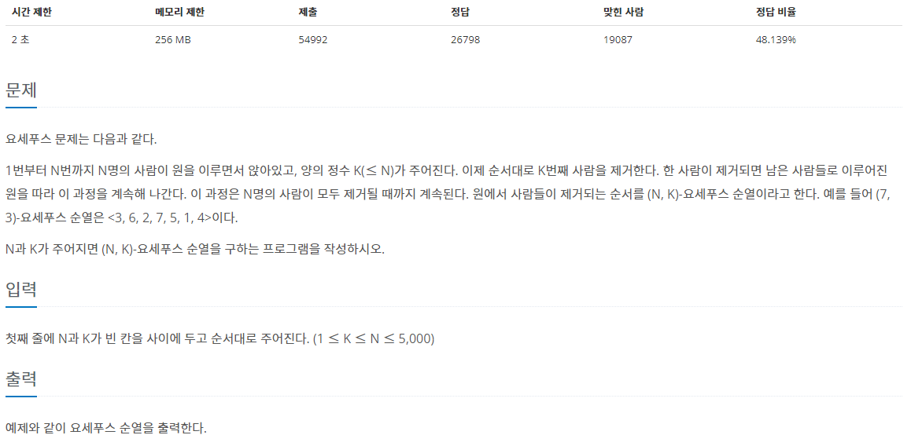
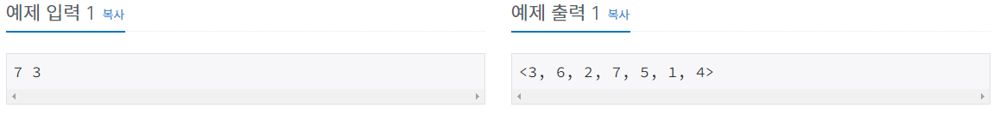
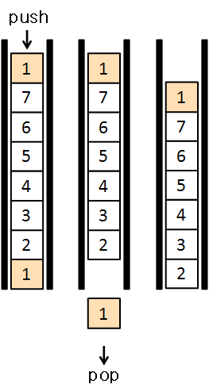
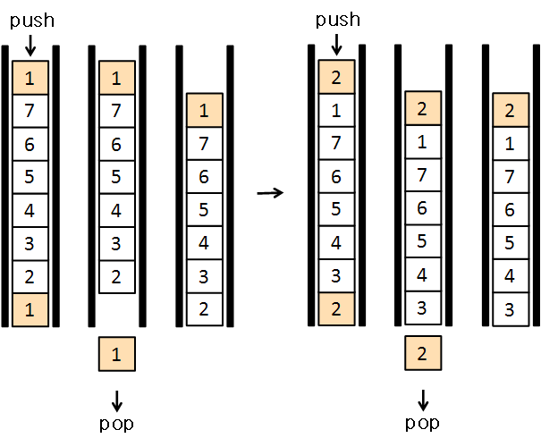
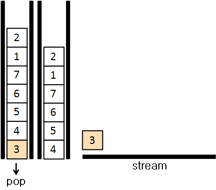

#INFO
난이도 : SIVLER5
알고리즘 유형 : 자료구조_큐(Queue)
출처 : 1158번: 요세푸스 문제 (acmicpc.net)
 
#SOLVE
큐(Queue)자료구조를 이용해서 문제를 풀이했다.
우선, 입력받은 N값까지 반복문을 돌려서 큐에 Push해준다.

queue<int> josephus;
for (int i = 0 ; i < N ; i++) {
josephus.push(i + 1);
}
다음으로 큐의 front를 push해주고, pop해준다. 그러면 front에 있던 "1"이 가장 위로 올라가게 된다.

이 과정을 M-1(2)번 반복해 준다.

마지막으로 M번째 수는 출력해주고, 큐에서 pop 해준다.

이것을 N번 반복해주면 요세푸스 순열을 구할 수 있다.
cout << "<";
for (int i = 0 ; i < N - 1 ; i++) {
for (int j = 0 ; j < M - 1 ; j++) {
josephus.push(josephus.front());
josephus.pop();
}
cout << josephus.front() << ", ";
josephus.pop();
}
cout << josephus.front() << ">\n";#CODE
#include <iostream>
#include <queue>
using namespace std;
int main(void){
ios_base::sync_with_stdio(0);
cin.tie(0); cout.tie(0);
int N,M;
cin >> N >> M;
queue<int> josephus;
for (int i = 0 ; i < N ; i++) {
josephus.push(i + 1);
}
cout << "<";
for (int i = 0 ; i < N - 1 ; i++) {
for (int j = 0 ; j < M - 1 ; j++) {
josephus.push(josephus.front());
josephus.pop();
}
cout << josephus.front() << ", ";
josephus.pop();
}
cout << josephus.front() << ">\n";
return 0;
}